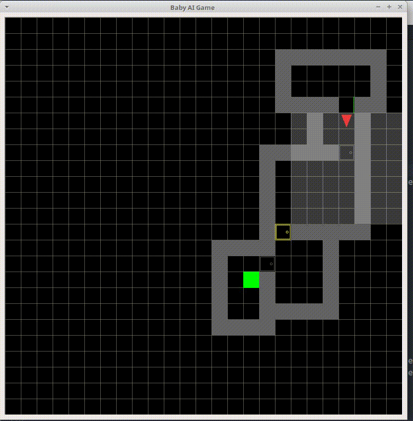
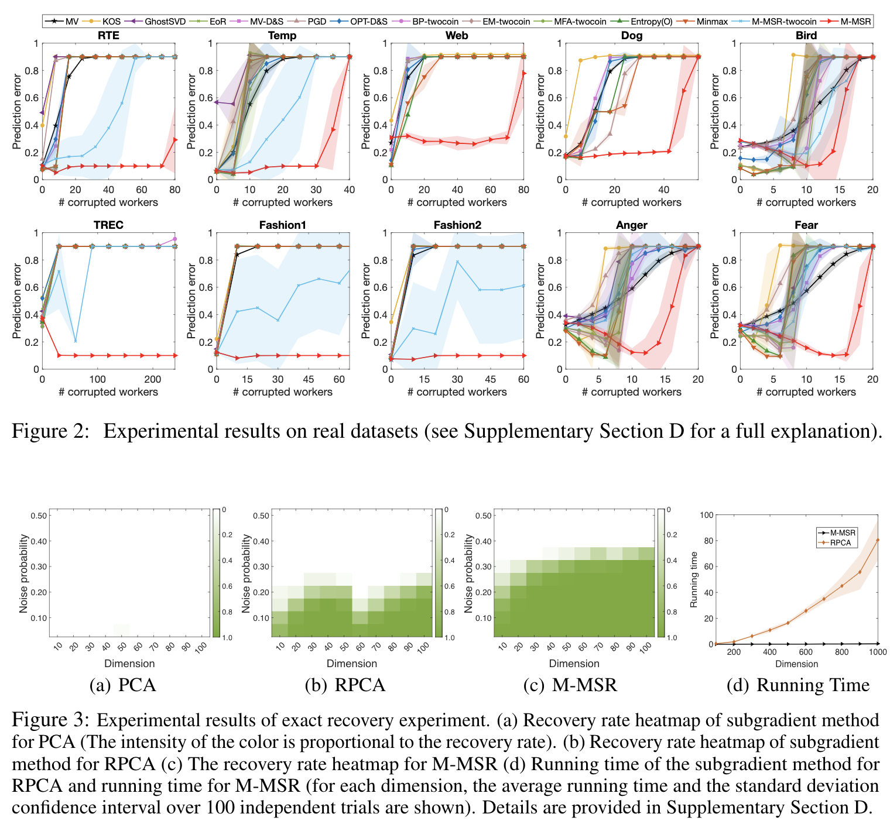
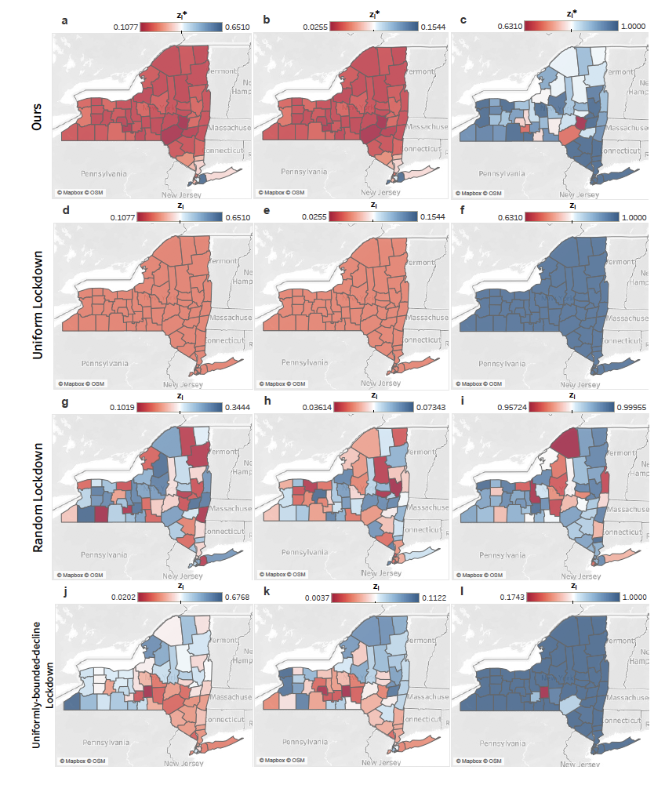
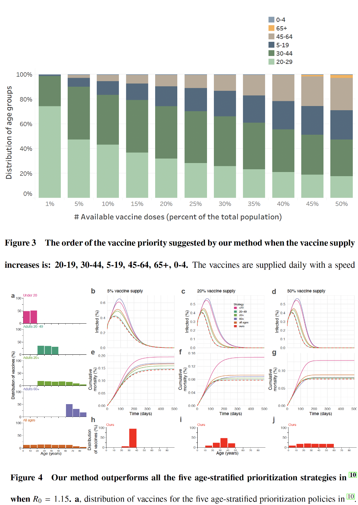
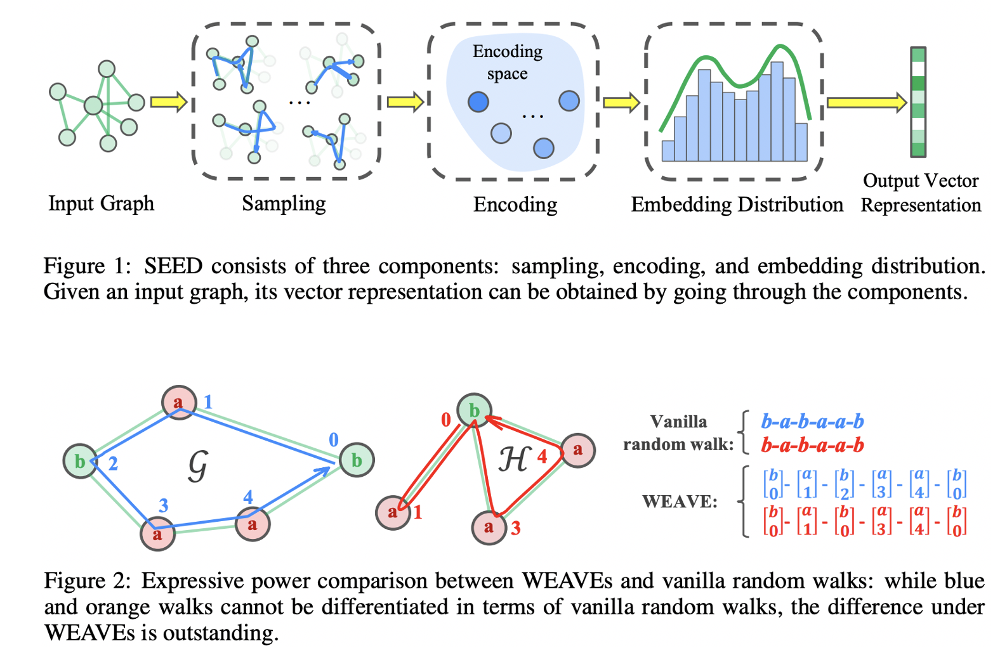
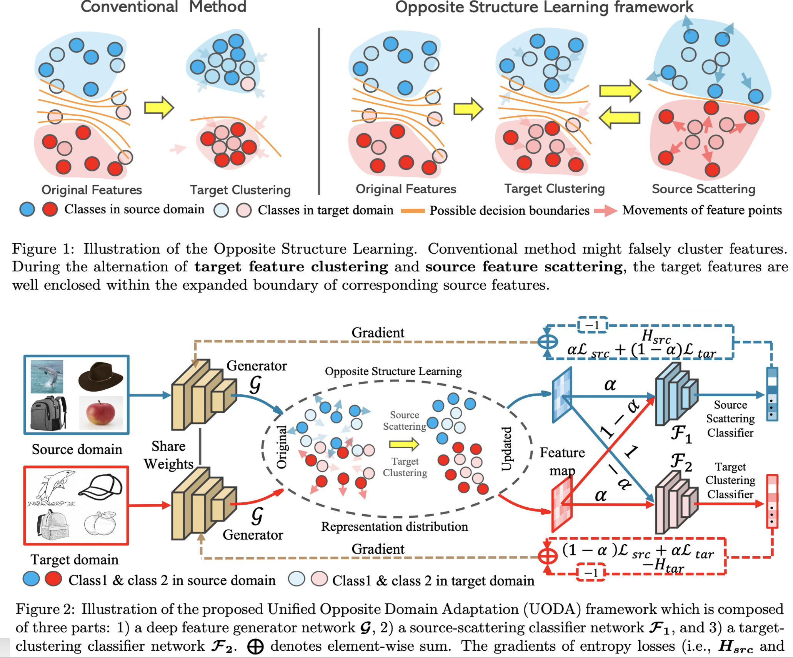
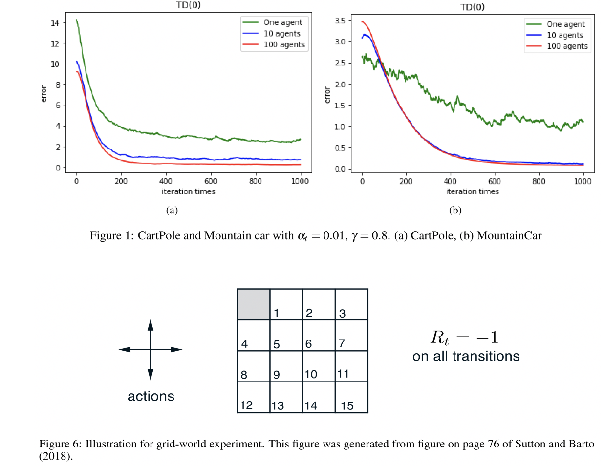
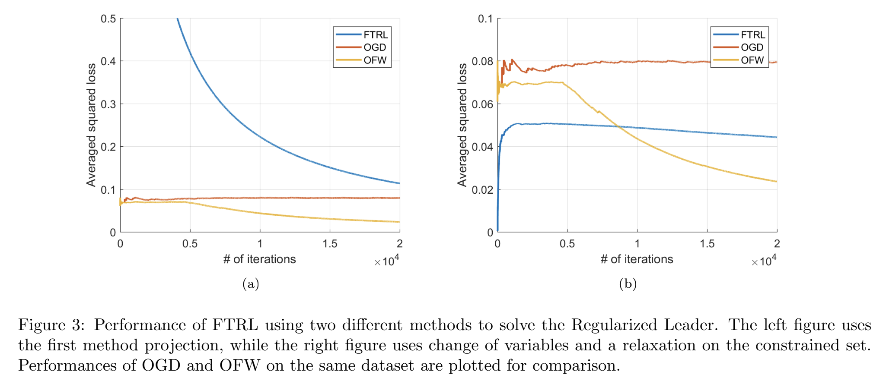

Graph-based Impact-driven Exploration for Procedually-generated Environment
Qianqian Ma, Dan Kushnir
2021.06-2021.08
Exploration in sparse reward environments remains one of the key challenges of model-free reinforcement learning. We proposed a novel reinforcement learning framework with a new type of intrinsic reward for exploration in sparse environments, especially for procedurally generated environments. We also evaluated the proposed method on multiple challenging procedurally-generated tasks in MiniGrid, achieved SOTA performance.

Adversarial Crowdsourcing Through Robust Rank-One Matrix Completion
Qianqian Ma, Alex Olshevsky
We consider the problem of reconstructing a rank-one matrix from a revealed subset of its entries when some of the revealed entries are corrupted with perturbations that are unknown and can be arbitrarily large. It is not known which revealed entries are corrupted. We propose a new algorithm combining alternating minimization with extreme-value filtering and provide sufficient and necessary conditions to recover the original rank-one matrix. In particular, we show that our proposed algorithm is optimal when the set of revealed entries is given by an Erdos-Renyi random graph. These results are then applied to the problem of classification from crowdsourced data under the assumption that while the majority of the workers are governed by the standard single-coin David-Skene model (i.e., they output the correct answer with a certain probability), some of the workers can deviate arbitrarily from this model. In particular, the ``adversarial'' workers could even make decisions designed to make the algorithm output an incorrect answer. Extensive experimental results show our algorithm for this problem, based on rank-one matrix completion with perturbations, outperforms all other state-of-the-art methods in such an adversarial scenario.

Optimal Lockdown for Pandemic Control
Qianqian Ma, Yang-Yu Liu, Alex Olshevsky
2020.06-2020.12 [PDF]
As a common strategy of contagious disease containment, lockdowns will inevitably weaken the economy. The ongoing COVID-19 pandemic underscores the trade-off arising from public health and economic cost. An optimal lockdown policy to resolve this trade-off is highly desired. Here we propose a mathematical framework of pandemic control through an optimal stabilizing non-uniform lockdown, where our goal is to reduce the economic activity as little as possible while decreasing the number of infected individuals at a prescribed rate. This framework allows us to efficiently compute the optimal stabilizing lockdown policy for general epidemic spread models, including both the classical SIS/SIR/SEIR models and a new model of COVID-19 transmissions. We demonstrate the power of this framework by analyzing publicly available data of inter-county travel frequencies to analyze a model of COVID-19 spread in the 62 counties of New York State. We find that an optimal stabilizing lockdown based on epidemic status in April 2020 would have reduced economic activity more stringently outside of New York City compared to within it, even though the epidemic was much more prevalent in New York City at that point. Such a counterintuitive result highlights the intricacies of pandemic control and sheds light on future lockdown policy design.

Optimal Vaccine Allocation for Pandemic Stabilization
Qianqian Ma, Yang-Yu Liu, Alex Olshevsky
2021.01-present
How to strategically allocate the available vaccines is a crucial issue for pandemic control. In this work, we propose a mathematical framework for optimal stabilizing vaccine allocation, where our goal is to send the infections to zero as soon as possible with a fixed number of vaccine doses. This framework allows us to efficiently compute the optimal vaccine allocation policy for general epidemic spread models including SIS/SIR/SEIR and a new model of COVID-19 transmissions. By fitting the real data in New York State to our framework, we found that the optimal stabilizing vaccine allocation policy suggests offering vaccines priority to locations where there are more susceptible people and where the residents spend longer time outside the home. Besides, we found that offering vaccines priority to young adults (20-29) and middle-age adults (20-44) can minimize the cumulative infected cases and the death cases. Moreover, we compared our method with five age-stratified strategies in Kate Bubar et al, 2021 based on their epidemics model. We also found it's better to offer vaccine priorities to young people to curb the disease and minimize the deaths when the basic reproduction number R_0 is moderately above one, which describes the most world during COVID-19. Such phenomenon has been ignored in Kate Bubar et al, 2021.

Inductive and Unsupervised Representation Learning on Graph Structured Objects
Lichen Wang, Qianqian Ma, Bo Zong
2019.07-2019.09 [PDF], [code (Python)]
Inductive and unsupervised graph learning is a critical technique for predictive or information retrieval tasks where label information is difficult to obtain. It is also challenging to make graph learning inductive and unsupervised at the same time, as learning processes guided by reconstruction error based loss functions inevitably demand graph similarity evaluation that is usually computationally intractable. In this paper, we propose a general framework SEED (Sampling, Encoding, and Embedding Distributions) for inductive and unsupervised representation learning on graph structured objects. Instead of directly dealing with the computational challenges raised by graph similarity evaluation, given an input graph, the SEED framework samples a number of subgraphs whose reconstruction errors could be efficiently evaluated, encodes the subgraph samples into a collection of subgraph vectors, and employs the embedding of the subgraph vector distribution as the output vector representation for the input graph. By theoretical analysis, we demonstrate the close connection between SEED and graph isomorphism. Using public benchmark datasets, our empirical study suggests the proposed SEED framework is able to achieve up to 10% improvement, compared with competitive baseline methods.

Contradictory Structure Learning for Semi-supervised Domain Adaptation
Can Qin, Lichen Wang, Qianqian Ma
2019.11-2020.01 [PDF]
Current adversarial adaptation methods attempt to align the cross-domain features, whereas two challenges remain unsolved: 1) the conditional distribution mismatch and 2) the bias of the decision boundary towards the source domain. To solve these challenges, we propose a novel framework for semi-supervised domain adaptation by unifying the learning of opposite structures (UODA). UODA consists of a generator and two classifiers (i.e., the sourcescattering classifier and the target-clustering classifier), which are trained for contradictory purposes. The target-clustering classifier attempts to cluster the target features to improve intra-class density and enlarge inter-class divergence. Meanwhile, the source-scattering classifier is designed to scatter the source features to enhance the decision boundary’s smoothness. Through the alternation of source-feature expansion and target-feature clustering procedures, the target features are well-enclosed within the dilated boundary of the corresponding source features. This strategy can make the cross-domain features to be precisely aligned against the source bias simultaneously. Moreover, to overcome the model collapse through training, we progressively update the measurement of feature’s distance and their representation via an adversarial training paradigm. Extensive experiments on the benchmarks of DomainNet and Office-home datasets demonstrate the superiority of our approach over the state-of-the-art methods.

Distributed TD(0) with almost no communication
Qianqian Ma, Rui Liu, Ruizhao Zhu
2021.04-2021.05 [PDF]
We studied a new TD(0) method with linear function approximation. In particular, to the extent that the variance of the temporal difference error affects the performance of TD(0), the performance of distributed TD(0) with local state is a factor of N times better than the performance of regular TD(0), where N is the number of agents. We provide the results of numerical experiments on classic control problems in the OpenAI Gym and a grid world Markov Decision Process (MDP).

Projection-Free Online Matrix Completion
Qianqian Ma, Artin Spiridonoff
2019.11-2019.12 [PDF]
In this project, we aim to propose a new efficient online algorithm to solve the low-rank matrix completion problem, by combining a fast offline algorithm for matrix completion BlockFW, and Online Frank-Wolfe algorithm. We utilize the techniques learned from the course (intro to Online Learning) to propose solutions to the problems we face during this project. Numerical simulations are performed to illustrate the performance of different methods.